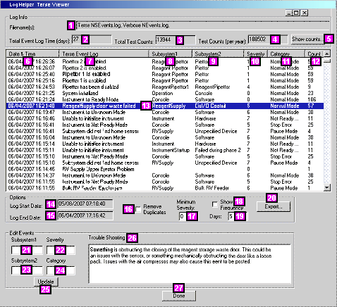
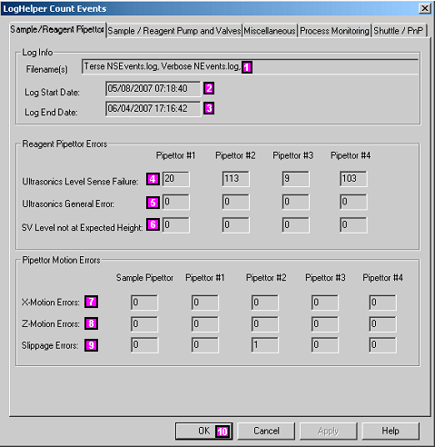
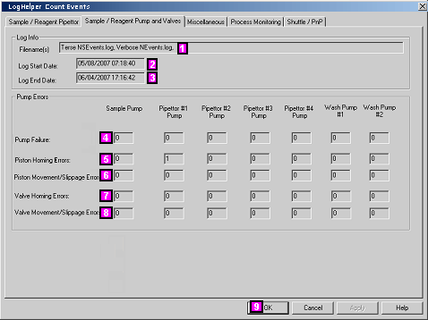
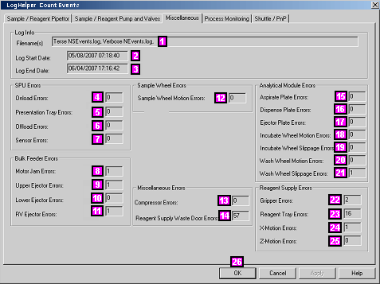
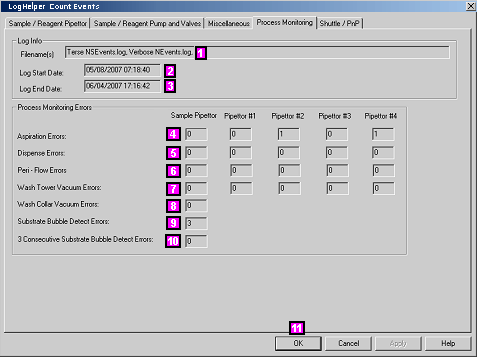
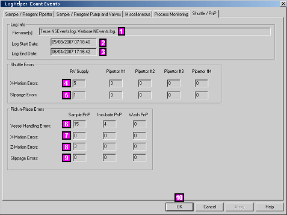

LogHelper Screen Details
LogHelper Overview
Using LogHelper as a troubleshooting tool:
- enables FSEs to view and analyze the Event Log on the console PC quickly without having to export any files.
- opens exported terse and verbose Event Log files and summarizes them.
- facilitates the evaluation of instrument and console events displayed within the console UI or within exported terse and verbose Event Log files.
- generates a frequency of events for a population of DxI instruments for issues trending and escalating purposes.
Main LogHelper Screen - Details

| Ref No. | Title | Description |
|---|---|---|
| 1 | Filename(s) | Always the file name as seen in the figure. |
| 2 | Total Event Log Time (days) | The total number of days the event log files has recorded (in the example, 27 days.) |
| 3 | Total Test Counts | The total number of tests processed in the total number of days. (In the example, 13944 test counts processed.) |
| 4 | Test Counts (per year) | The annualized test counts expected to be processed based on current data. (In the example, 188502 test counts.) |
| 5 | Show Counts | Selecting this button will itemize most event errors into the respective modules shown in the next screen. |
| 6 | Date & Time | The date and time when the events occurred. Can be displayed in descending or ascending order. Click on the header to the change order. |
| 7 | Terse Event Log | The event text identical to the console user interface (UI). Click on the header to the sort the items alphabetically. |
| 8 | Subsystem1 | The primary subsystem related to the event error. Click on the header to the sort the items. |
| 9 | Subsystem2 | The primary subsystem related to the event error. Click on the header to the sort the items. |
| 10 | Severity | The severity of the event error. Zero is the lowest severity and 9 is highest. Click on the header to the sort the items.
The current guidelines for interpreting event severity are:
|
| 11 | Category | The operation mode when the event error occurred. Click on the header to the sort the items. |
| 12 | Count | The occurrence frequency of the event error. Click on the header to the sort the items. |
| 13 | Highlighted Log Entry | Left-click on an individual event log message to highlight the message. See item 26. |
| 14 | Log Start Date | The date the event log details begin. |
| 15 | Log End Date | The date the event log details end. |
| 16 | Remove Duplicates | Selecting this option removes all duplicate entries for a specific event. The date and time of the first occurrence of the specific event is displayed. |
| 17 | Minimum Severity | Input the severity number for the least severe events to be displayed. The default is zero. Setting the minimum severity to 5 displays events with a severity of 5 to 9, which are considered critical errors. |
| 18 | Show Frequency | Selecting this option displays the event counts as a frequency using the value specified in the Days input box as the unit of time for calculating the value. |
| 19 | Days | Used as the unit of time when calculating the frequency of an event for the Show Frequency option. |
| 20 | Export | Selecting this feature exports the event log to the hard drive in .csv format. |
| 21 | Subsystem1 | The user-defined primary subsystem associated with the highlighted event. |
| 22 | Severity | The user-define severity of the event with 0 being the least severe event, and 9 being the most severe event. |
| 23 | Subsystem2 | The user-defined secondary subsystem associated with the highlighted event. |
| 24 | Category | The user-defined category for the event that the LogHelper development team can use for troubleshooting and analyzing instrument errors. |
| 25 | Update | Selecting this button accepts any changes to the user-defined event data and updates all the displayed events with the new values. Values that are user-defined include subsystem1, subsystem2, severity, category, and the troubleshooting text displayed. |
| 26 | Troubleshooting | Provides common causes for the highlighted event error and suggestions for resolving the error (refer to item 13). |
| 27 | Done | Selecting this button closes this screen. |
Sample or Reagent Pipettor Show Counts Screen - Details
This section contains detailed counts for these five areas:
- Sample or Reagent Pipettor
- Sample or Reagent Pump and Valves
- Miscellaneous (SPU, Bulk Feeder, Sample Wheel, Analytical Module, Reagent Storage Module, Air Compressor)
- Process Monitoring
- Shuttles or Pick-and-Place

| Ref No. | Title | Description |
|---|---|---|
| 1 | Filename(s) | Always the file name as seen in the figure. |
| 2 | Log Start Date | The date the event log details begin. |
| 3 | Log End Date | The date the event log details end. |
| 4 | Ultrasonics Level Sense Failure | The number of ultrasonics level sense failures for reagent pipettors 1 to 4. |
| 5 | Ultrasonics General Error | The number of ultrasonics general errors for reagent pipettors 1 to 4. |
| 6 | SV Level Not at Expected Height | The number of SV level not at expected height errors for reagent pipettors 1 to 4. |
| 7 | X-Motion Errors | The number of x-motion errors for the sample pipettor and reagent pipettors 1 to 4. |
| 8 | Z-Motion Errors | The number of z-motion errors for the sample pipettor and reagent pipettors 1 to 4. |
| 9 | Slippage Errors | The number of slippage errors for the sample pipettor and reagent pipettors 1 to 4. |
| 10 | OK | Selecting this button closes this screen. |
Sample or Reagent Pump and Valves Show Counts screen
The Sample or Reagent Pump and Valves Show Counts screen displays the pump failures, piston homing errors, piston movement or slippage errors, valve homing errors, and valve movement or slippage errors for the sample pump, pipettors 1 to 4, and two wash pumps.

| Ref No. | Title | Description |
|---|---|---|
| 1 | Filename(s) | Always the file name as seen in the figure. |
| 2 | Log Start Date | The date the event log details begin. |
| 3 | Log End Date | The date the event log details end. |
| 4 | Pump Failures | The number of pump failures errors for (from left to right) the sample pump, precision pumps 1 to 4, and wash pumps 1 and 2. |
| 5 | Piston Homing Errors | The number of piston homing errors for (from left to right) the sample pump, precision pumps 1 to 4, and wash pumps 1 and 2. |
| 6 | Piston Movement / Slippage Errors | The number of piston movement or slippage error for (from left to right) the sample pump, precision pumps 1 to 4, and wash pumps 1 and 2. |
| 7 | Valve Homing Errors | The number of valve homing errors for (from left to right) the sample pump, precision pumps 1 to 4, and wash pumps 1 and 2. |
| 8 | Valve Movement / Slippage Errors | The number of valve movement or slippage errors for (from left to right) the sample pump, precision pumps 1 to 4, and wash pumps 1 and 2. |
| 9 | OK | Selecting this button closes this screen. |
Miscellaneous Show Counts screen

| Ref No. | Title | Description |
|---|---|---|
| 1 | Filename(s) | Always the file name as seen in the figure. |
| 2 | Log Start Date | The date the event log details begin. |
| 3 | Log End Date | The date the event log details end. |
| 4 | SPU Onload Errors | The number of SPU on-load errors. |
| 5 | SPU Presentation Tray Errors | The number of SPU presentation tray errors. |
| 6 | SPU Offload Errors | The number of SPU off-load errors. |
| 7 | SPU Sensor Errors | The number of SPU sensor errors. |
| 8 | Bulk Feeder Motor Jam Errors | The number of bulk feeder motor jam errors. |
| 9 | Bulk Feeder Upper Ejector Errors | The number of bulk feeder upper ejector errors. |
| 10 | Bulk Feeder Lower Ejector Errors | The number of bulk feeder lower ejector errors. |
| 11 | Bulk Feeder RV Ejector Errors | The number of bulk feeder RV ejector errors. |
| 12 | Sample Wheel Motion Errors | Displays the number of sample wheel motion errors. |
| 13 | Compressor Errors | The number of air compressor errors. |
| 14 | Reagent Supply Waste Door Errors | The number of reagent supply waste door errors. |
| 15 | Analytical Module Aspirate Plate Errors | The number of analytical module aspirate plate errors. |
| 16 | Analytical Module Dispense Plate Errors | The number of analytical module dispense plate errors. |
| 17 | Analytical Module Ejector Plate Errors | The number of analytical module ejector plate errors. |
| 18 | Analytical Module Incubator Wheel Motion Errors | The number of analytical module incubator wheel motion errors. |
| 19 | Analytical Module Incubator Wheel Slippage Errors | The number of analytical module incubator wheel slippage errors. |
| 20 | Analytical Module Wash Wheel Motion Errors | The number of analytical module wash wheel motion errors. |
| 21 | Analytical Module Slippage Errors | The number of analytical module slippage errors. |
| 22 | Reagent Gripper Errors | The number of reagent gripper errors. |
| 23 | Reagent Tray Errors | The number of reagent tray errors. |
| 24 | Reagent X-Motion Errors | The number of reagent x-motion errors. |
| 25 | Reagent Z-Motion Errors | The number of reagent x-motion errors. |
| 26 | OK | Selecting this button closes this screen. |

| Ref No. | Title | Description |
|---|---|---|
| 1 | Filename(s) | Always the file name as seen in the figure. |
| 2 | Log Start Date | The date the event log details begin. |
| 3 | Log End Date | The date the event log details end. |
| 4 | Aspiration Errors | The number of aspiration errors for (from left to right) the sample pipettor and reagent pipettor 1 to 4. |
| 5 | Dispense Errors | The number of dispense errors for (from left to right) the sample pipettor and reagent pipettor 1 to 4. |
| 6 | Peri-Flow Errors | The number of peri-flow errors for (from left to right) the sample pipettor and reagent pipettor 1 to 4. |
| 7 | Wash Tower Vacuum Errors | The number of wash tower vacuum errors for (from left to right) the sample pipettor and reagent pipettor 1 to 4. |
| 8 | Wash Collar Vacuum Errors | The number of wash collar vacuum errors for the sample pipettor. |
| 9 | Substrate Bubble Detect Errors | The number of substrate bubble detect errors for the sample pipettor. |
| 10 | 3 Consecutive Bubble Detect Errors | The number of triple consecutive bubble detect errors for the sample pipettor. |
| 11 | OK | Selecting this button closes this screen. |

| Ref No. | Title | Description |
|---|---|---|
| 1 | Filename(s) | Always the file name as seen in the figure. |
| 2 | Log Start Date | The date on which the event log details begin. |
| 3 | Log End Date | The date on which the event log details end. |
| 4 | Shuttle (Carriage) X-Motion Errors | The number of x-motion errors for (from left to right) the RV supply carriage and reagent pipettor 1 to 4 carriages. |
| 5 | Shuttle (Carriage) Slippage Errors | The number of slippage errors for (from left to right) the RV supply carriage and reagent pipettor 1 to 4 carriages. |
| 6 | Pick-n-Place Vessel Handling Errors | The number of vessel handling errors for (from left to right) the sample pick-and-place, incubator pick-and-place, and wash pick-and-place. |
| 7 | Pick-n-Place X-Motion Errors | The number of x-motion errors for (from left to right) the sample pick-and-place, incubator pick-and-place, and wash pick-and-place. |
| 8 | Pick-n-Place Z-Motion Errors | The number of z-motion errors for (from left to right) the sample pick-and-place, incubator pick-and-place, and wash pick-and-place. |
| 9 | Pick-n-Place Slippage Errors | The number of slippage errors for (from left to right) the sample pick-and-place, incubator pick-and-place, and wash pick-and-place. |
| 10 | OK | Selecting this button closes this screen. |